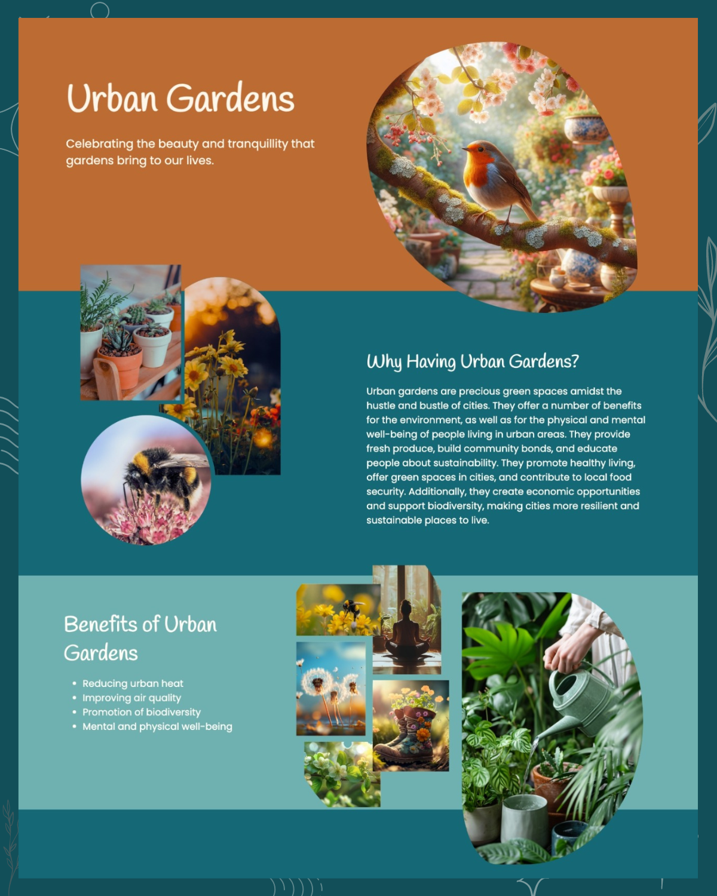
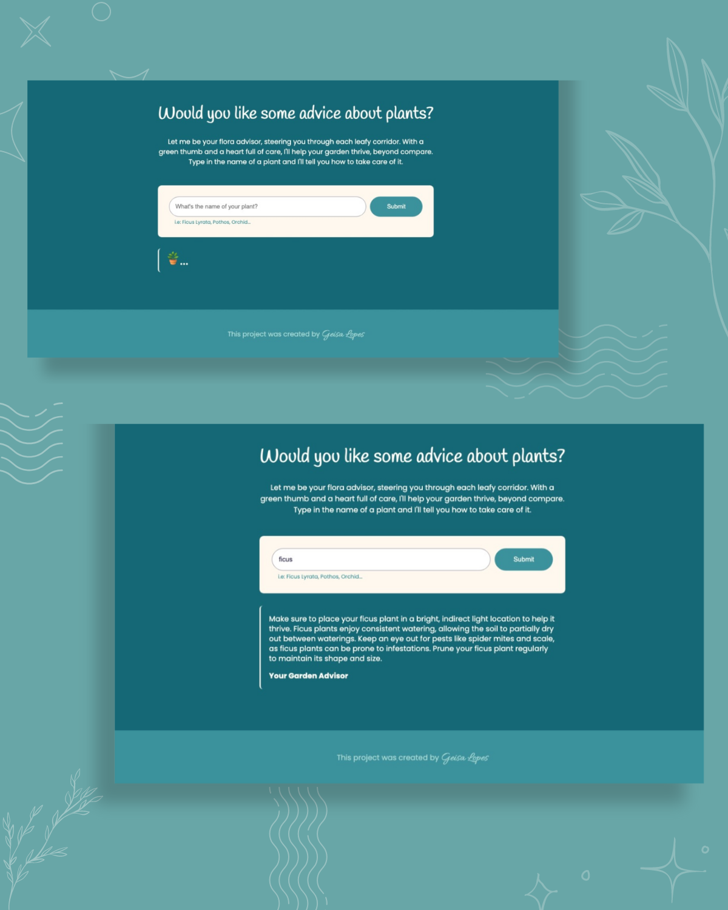

Urban Gardens
Urban Gardens is a project dedicated to highlighting the vital role of green spaces in large cities. By focusing on the benefits of urban gardens, the project aims to inspire a greater appreciation for nature within urban environments.
Visit the pageThe landing page features a clean and vibrant design, using bold colors and minimal text to effectively convey its message. The AI-generated images reinforce the ecological and social benefits of urban gardens. The page is designed to be both aesthetically pleasing and easy to navigate, demonstrating how even a small, well-crafted page can make a strong impact.
A key feature of the page is an interactive AI that allows users to type the name of a plant and receive personalized care tips. This tool makes the experience engaging and enjoyable, particularly for those who love gardening. By offering practical advice in a fun and interactive way, the AI helps visitors deepen their connection to urban gardening and encourages them to bring more green into their city lives.
This page is built using HTML and CSS, with JavaScript powering the AI interaction. It is fully responsive, adapting seamlessly across devices, showcasing the capabilities of modern web design. Although it is a small landing page, it serves as a demonstration of what could be expanded into a more extensive project.